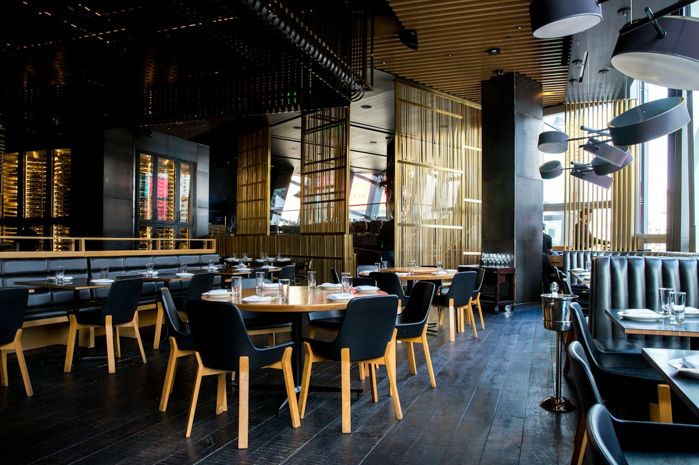
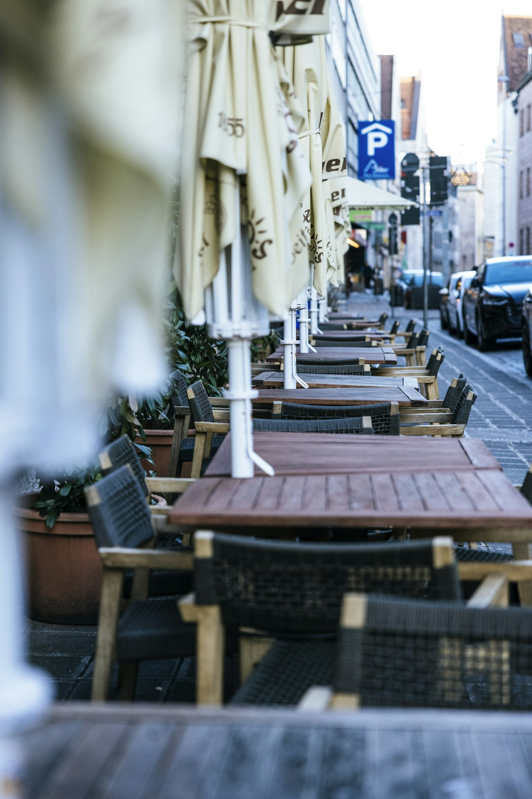

01 / ARCHITECTURE
Where
Where
Stone
Meets
Water.
Built around a cascading stone waterfall and wrapped in living greenery, Z Cafe is not a restaurant you visit — it's a place you enter. Every arch, every lantern, every rustling palm was placed to make the city disappear the moment you step through the walkway.


02 / CULINARY
We cook across borders — Punjabi mains slow-simmered the way they should be, Asian small plates with real heat and finesse, wood-fired pizzas with blistered crusts — and serve it all under open sky, candlelight, and the sound of falling water.